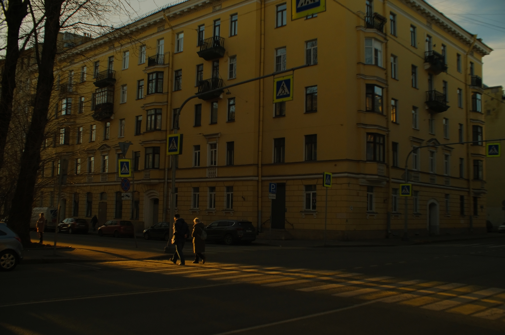
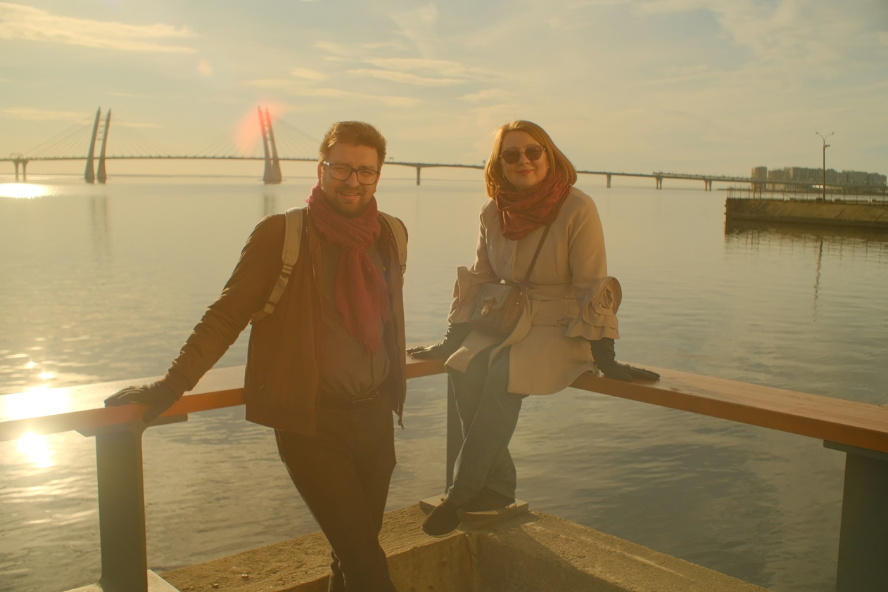
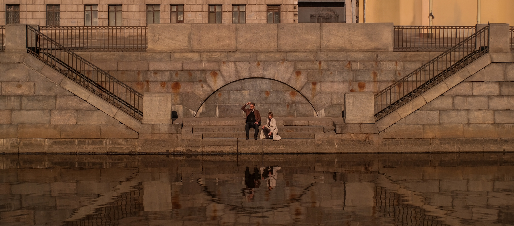
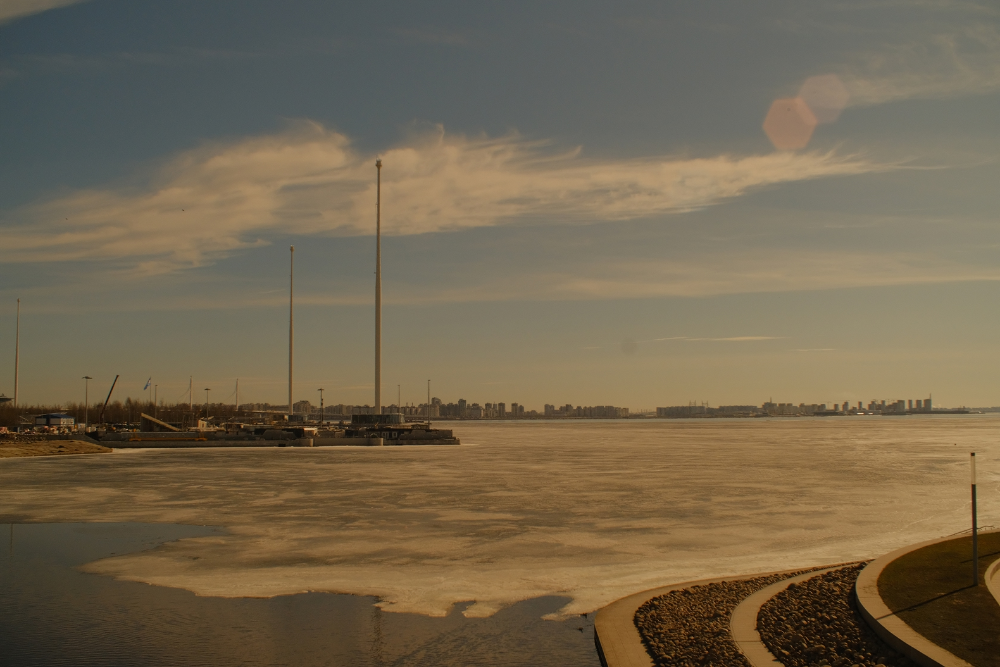
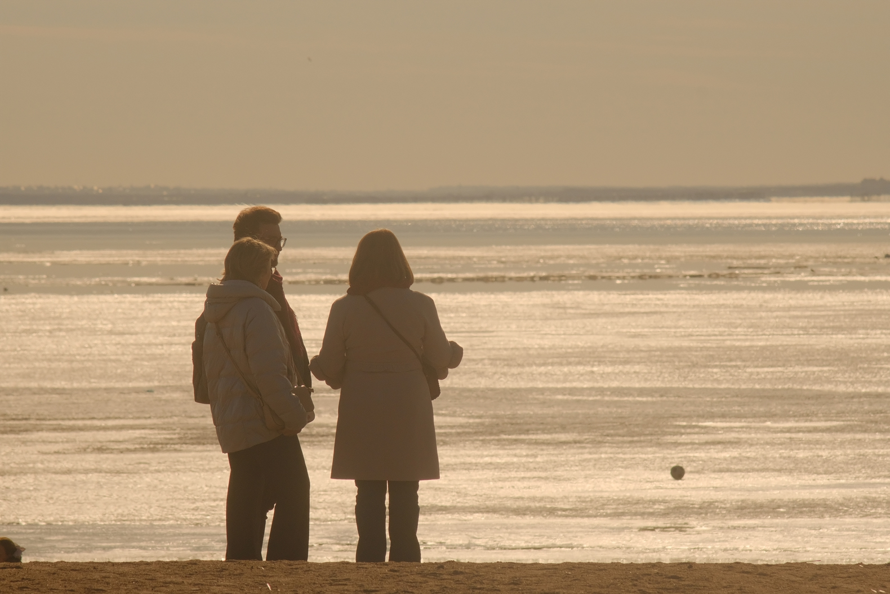
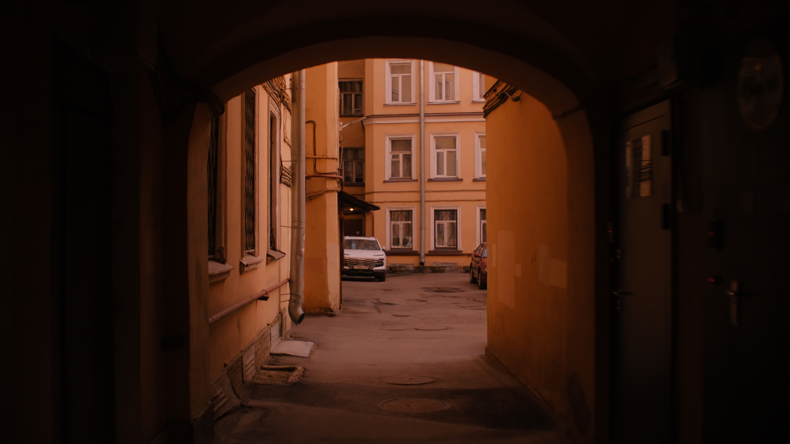
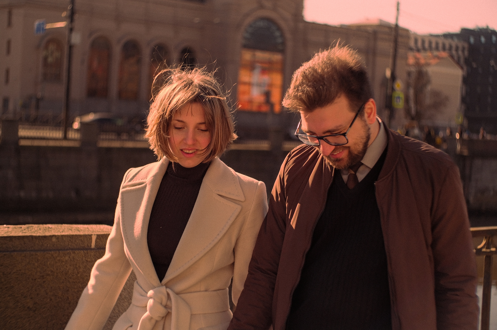

Разговор о плёночной фотографии сегодня чаще всего начинается с внешнего вида. Говорят о зерне, мягких цветах, «киношном» свете, характерной передаче кожи. В цифровых камерах появились режимы симуляции плёнки, в редакторах — десятки пресетов с названиями старых плёнок. Складывается ощущение, что плёнка — это прежде всего набор визуальных эффектов, которые можно воспроизвести технически. Однако если сравнить сами условия съёмки, станет заметно, что различия лежат глубже [8].
Вид с самого высокого здания Европы
Плёнка объективно менее удобна. Фотограф не видит результат сразу, не может точно скорректировать баланс белого, ограничен количеством кадров. Если съёмка происходит вечером, и экспозиция выбрана неверно, это станет понятно только после проявки. В цифровой среде подобные ограничения давно сняты: можно сделать серию из двадцати дублей, проверить гистограмму, переснять, удалить неудачные варианты. С точки зрения эффективности цифровая камера рациональнее. Тем не менее многие фотографы — в том числе те, кто вырос уже в эпоху цифры, – продолжают говорить о «другом ощущении» от плёнки [8].
Это ощущение складывается из двух компонентов. Первый связан с самим изображением — его тональной кривой, цветопередачей, микроконтрастом. Второй — с поведением фотографа в момент съёмки. И именно второй фактор часто оказывается недооценённым.

Васильевский остров
У подножья Лахта-центраНабережная Обводного канала

Севкабель
Ограничение как часть процесса
Представим обычную ситуацию: прогулка по городу, интересный свет, человек на фоне витрины. С цифровой камерой естественная реакция — сделать несколько кадров подряд, немного изменить ракурс, попробовать другие фокусные расстояния, проверить сделанные кадры. С плёнкой поведение иное. Когда в кассете остаётся десять кадров, фотограф невольно начинает оценивать сцену иначе. Возникает пауза перед нажатием. Внимание смещается с количества попыток на точность выбора момента [3][7].
Это не романтизация, а простая психология. Ограничение заставляет концентрироваться. Именно поэтому при попытке «снимать как на плёнку» имеет смысл сознательно сократить количество дублей. Делать один или два кадра сцены. Не возвращаться к ней бесконечно. Такая дисциплина постепенно меняет ритм работы.
Второй важный аспект — отсутствие мгновенного контроля. На плёнке нельзя посмотреть, «как получилось». Это снижает тревожность, связанную с постоянной проверкой, но одновременно и требует доверия к собственному выбору. В цифровой съёмке можно воспроизвести это условие, отключив автоматический просмотр. Вначале это кажется непривычным: хочется посмотреть на сделанный кадр. Но через некоторое время появляется ощущение большей вовлечённости в саму сцену, а не в её оценку [7].
Третий принцип — не удалять и не изменять фотографии после съёмки. Речь не о техническом запрете редактирования, а о сознательном решении принять результат. Максимум допустимого — кадрирование, если оно необходимо для композиции. Цвет, контраст, «настроение» кадра остаются такими, какими они были зафиксированы. Это создаёт другую ответственность: решения принимаются в момент съёмки, а не в редакторе.
Смотровая площадка Лахта-центра
Баланс белого также лучше устанавливать вручную и не корректировать от сцены к сцене. У цветной плёнки он фиксирован и часто имеет небольшой уклон в тепло. Если в цифровой камере выбрать температуру чуть теплее нейтральной и сохранить её на протяжении всей серии, изображения приобретут единый характер. Небольшой системный сдвиг цвета начинает работать как часть стиля, а не как ошибка [8].

Обводный канал
Мыс Канонерского островаКанонерский островФонтанка
Визуальные особенности плёнки
Помимо процесса, существует и техническая сторона. Плёночное изображение формируется не только самой плёнкой, но и оптикой. Многие объективы прошлого имели заметные аберрации, лёгкое виньетирование и падение резкости по краям кадра. Сегодня цифровые системы стремятся к максимальной коррекции этих эффектов. В результате изображение становится более ровным, но иногда — слишком однородным [8].
Микроконтраст у плёнки обычно ниже, чем у цифровой камеры с активным шарпингом. Мелкие детали не подчёркнуты чрезмерно, контуры мягче. Если сравнить портрет, снятый на современную камеру с высокой резкостью, и портрет на плёнку, различие часто будет ощущаться именно в локальной контрастности: цифровой вариант выглядит более «жёстким» [8].
Отдельного внимания заслуживает эффект halation — лёгкое свечение вокруг ярких источников света. Этот эффект возникает из-за отражения света внутри камеры и взаимодействия со слоями эмульсии. Свет, отражаясь, попадает на плёнку повторно уже рассеянным и ослабленным, что проявляется в виде красноватого ореола, поскольку нижний слой цветной плёнки чувствителен к красному спектру. Этот эффект можно заметить, например, вокруг фонарей в ночной съёмке или при контровом свете. В цифровых системах подобное свечение отсутствует по физическим причинам, поэтому его приходится имитировать искусственно [8].

Финский залив
Зерно плёнки также отличается от цифрового шума. Оно связано с физической структурой светочувствительных кристаллов и распределяется неравномерно. В светлых и тёмных участках зерно выглядит по‑разному, влияя на ощущение текстуры. Добавление цифрового шума не всегда даёт тот же эффект, поскольку шум накладывается поверх изображения, а не является его частью. То есть если плёночное изображение состоит из этих зёрен, то цифровой шум обладает иной природой [8].
Тональная кривая плёнки нелинейна. Тени часто мягко «приподняты», света не обрываются резко, а постепенно переходят в пересвет. Это особенно заметно при съёмке в яркий солнечный день: плёнка нередко сохраняет детали в светлых областях более плавно, тогда как цифровой файл при неверной экспозиции может дать жёсткий клиппинг. Здесь важен не столько номинальный динамический диапазон, сколько характер переходов [8].
Цветопередача у разных типов плёнки различается, но в целом цвета менее изолированы. Каналы влияют друг на друга, поэтому оттенки получаются сложнее, реже встречаются абсолютно «чистые» красный, зелёный или синий. Особенно это заметно на коже: тон выглядит естественно именно за счёт этой нелинейности [8].

На берегу Финского залива
Практический подход к цифровой симуляции
Если задача состоит в том, чтобы приблизить цифровую съёмку к плёночному ощущению, стоит сочетать технические и поведенческие изменения. Можно использовать встроенные профили камеры или заранее настроенные цветовые кривые. Следует избегать чрезмерного шарпинга и агрессивного повышения микроконтраста. Можно применить mist-фильтр, который снижает микроконтраст и даёт эффект, похожий на halation. Баланс белого лучше фиксировать вручную, выбрав одно значение для всей серии.

Случайный двор
Однако без изменения самого подхода к съёмке эти меры будут работать лишь частично. Ограничение количества кадров, отказ от постоянной проверки результата и принцип «ничего не удалять и не изменять» формируют другую дисциплину. Со временем именно она начинает влиять на характер изображений сильнее, чем любой пресет.
В итоге плёнка воспринимается иначе не потому, что она технически совершеннее, а потому что сочетает в себе определённую физику изображения и ограничения процесса. Когда цифровая съёмка учитывает оба этих аспекта, визуальный результат и отношение к нему постепенно меняются.
Ночью на Канонерском острове

На Набережной Обводного каналаВ кафе у Лахта-центра
Стало интересно?
Больше материалов по теме — на главной странице сайта.